방사선비파괴검사기사(구) (2009-08-30 기출문제)
1과목: 방사선투과시험원리
1. 방사선투과사진 촬영에서 산란선 방지를 위한 조치로 다음 중 효과가 가장 작은 것은?
- 필름홀더에 연박스크린을 넣었다.
- 필름 뒷면에 얇은 합판을 부착했다.
- 방사구에 다이아프램을 설치하였다.
- 시험체 주위에 마스크를 설치하였다.
(정답률: 알수없음)

2. 다음 중 필름을 개봉하여도 필름에 미치는 영향이 가장 적은 환경은?
- 황화수소가 발생하는 장소
- 헬륨 가스가 발생하는 장소
- 포르말린 증기가 발생하는 장소
- 암모니아 가스가 발생하는 장소
(정답률: 알수없음)
3. 다음 중 방사선 투과사진에 필요한 물리적 특성과 거리가 먼 것은?
- 투과
- 회절
- 직진
- 감광
(정답률: 알수없음)
4. 다음 중 주강품에 생기는 결함으로서 응고 직후에 생기며, 결정립계에 존재하는 불순물이 취약하게 되어 결정립간에 인장력이 작용하면 생기는 결함은?
- 수축공
- 냉간균열
- 퀜칭균열
- 열간균열
(정답률: 알수없음)
5. 방사선투과시험의 필름 콘트라스트에 대한 설명으로 옳은 것은?
- 저농도 필름일수록 크다.
- 감마치가 높을수록 크다.
- 감마치와 무관하게 일정하다.
- 피사체 콘트라스트가 클수록 크다.
(정답률: 알수없음)
6. 각각의 방사성 동위원소에서 방출되는 γ선 에너지의 값이 옳은 것은?
- Cs-137 : 약 60MeV
- Co-60 : 약 1.33MeV
- Tm-170 : 약 10.5MeV
- Ir-192 : 약 0.⑤MeV
(정답률: 알수없음)
7. 압연 강판에 존재하는 라미네이션(lamination)을 검출하기 위한 가장 효과적인 비파괴검사법은?
- 방사선투과검사
- 중성자투과시험
- 와전류탐상검사
- 초음파탐상검사
(정답률: 알수없음)
8. 물체가 변형할 때 그 물체의 표면에 부착시켜 놓은 소자의 변형에 의하여 전기적인 변화를 측정하므로 제품이나 부품의 전체적인 모니터링이 가능한 특수비파괴검사법은?
- 전위차시험
- 스트레인측정시험
- 전자초음파공명시험
- 기체 방사성동위원소시험
(정답률: 알수없음)
9. 방사선투과시험에서 X선 발생장치의 표적(타게트)이 가져야 할 특성과 거리가 먼 것은?
- 용융점이 높아야 한다.
- 원자번호가 커야 한다.
- 열전도성이 낮아야 한다.
- X선 발생효율이 높아야 한다.
(정답률: 알수없음)
10. 와전류탐상시험에서 비전도성 막이나 비자성 금속의 막두께를 측정할 수 있는 것은 어떤 현상을 이용한것인가?
- 표피효과(Skin effect)
- 산란효과(Scattering effect)
- 감쇠효과(Attenuation effect)
- 리프트-오프효과(Lift-off effect)
(정답률: 알수없음)
11. 다음 중 침투탐상시험이 적합한지를 선택하는 조건과 거리가 먼 것은
- 시험체의 재질
- 시험체의 형상
- 시험체의 표면 상태
- 시험체의 제작 공차
(정답률: 알수없음)
12. 철강재의 용접으로 발생되는 냉간균열을 찾아내기위한 비파괴검사 시기로 가장 적합한 것은?
- 용접 후 즉시
- 용접 후 약 3시간 후
- 용접 후 약 12시간 후
- 용접 후 약 24시간 후
(정답률: 알수없음)
13. 다음 중 초음파탐상시험으로 발견하기 가장 쉬운 결함은?
- 구형으로 된 공동
- 금속 내부에 개재된 슬래그
- 초음파의 진행 방향과 평행한 결함
- 초음파의 진행 방향과 직각으로 확대된 결함
(정답률: 알수없음)
14. 다른 비파괴검사와 비교했을 때 와전류탐상시험의 장점에 대한 설명으로 틀린 것은?
- 결함 형사의 판별이 뛰어나다.
- 전도체의 표면결함에 대한 감도가 높다.
- 고속으로 자동화된 전수검사가 가능하다.
- 시험체와 코일이 비접촉으로 검사가 가능하다.
(정답률: 알수없음)
15. 가시광선이나 X선 또는 γ선에 노출되면 훌륭한 전기도체가 되는 원리를 이용하여 셀레늄(selenium)판에 시험체의 상을 기록하여 건식현상 처리하는 방사선투과시험은?
- 자동(Auto) 방사선투과시험
- 제로(Xero) 방사선투과시험
- 입체(Stereo) 방사선투과시험
- 실시간(Realtime) 방사선투과시험
(정답률: 알수없음)
16. 누설시험과 관련하여 부피가 일정한 밀폐된 탱크내이상기체 온도가 0℃, 압력이 40psi 일 때 다른 조건의 변화없이 이상기체의 온도만 50℃ 로 상승할때 탱크내 기체의 압력은 약 몇 psi 인가?
- 40.1
- 42.5
- 45.2
- 47.3
(정답률: 알수없음)
17. 다음 중 비파괴검사의 자기탐상시험과 관련한 용어로 옳은 것은?
- 투자율
- DAC 곡선
- 스넬의 법칙
- 음향 임피던스
(정답률: 알수없음)
18. 자분탐상시험에서 히스테리시스곡선의 종축과 횡축이 나타내는 것은?
- 자속밀도, 투자율
- 자계의 세기, 투자율
- 자속밀도, 자계의 세기
- 자화의 세기, 자계의 세기
(정답률: 알수없음)
19. 할로겐누설시험에서 가열양극 할로겐법의 장점을 설명한 것으로 틀린 것은?
- 사용이 간편하고 능률적이다.
- 할로겐 추적가스에만 응답한다.
- 기름에 막혀 있는 누설도 검출할 수 있다.
- 진공상태에서도 일반적인 검출기를 이용하여 시험할 수 있다.
(정답률: 알수없음)
20. 다른 침투탐상시험과 비교하여 수세성 형광침투탐상시험의 단점은?
- 거친 시험면에 적용할 수 없다.
- 얕은 표면 결함을 검출하는데 신뢰성이 떨어진다.
- 다량의 소형 부품을 탐상하는데 시간이 많이 걸린다.
- 다양한 크기 및 형상의 시험체에 적용하는데 어렵다.
(정답률: 알수없음)
2과목: 방사선투과검사
21. 방사선투과검사시 시험체에 여러 가지 불연속들이 나타났을 때 가장 적절한 조치로 옳은 것은?
- 시험체를 전량 폐기해야 한다.
- 불연속들을 모두 제거한 후 시험체를 사용해야 한다.
- 불연속은 적용 허용기준의 요건에 의해 판정되어야한다.
- 균열의 깊이를 확인하기 위해 인장응력 테스트를 실시하여야 한다.
(정답률: 알수없음)
22. 투과 두께가 10mm인 강용접부를 방사선투과검사한결과 필름상에 투과도계의 0.1mm인 선이 나타났다면 투과도계 식별도는 몇 %가 되는가?
- 0.1%
- 1%
- 5%
- 10%
(정답률: 알수없음)
23. 선원의 위치를 바꾸어 촬영하는 방사선투과검사로 결함의 위치를 측정하는 것이 가능할 때, 다음 조건으로 시험체 저면에서 결함까지의 깊이(H)를 올바르게 나타낸 식은?
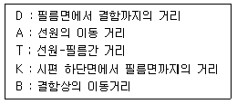
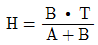
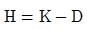
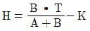
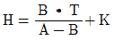
(정답률: 알수없음)
24. 방사선투과검사에서 선원으로 X선발생장치 대신 γ선발생장치를 사용할 때의 장점을 설명한 것으로 틀린 것은?
- X선 발생장치에 비해 가격이 저렴하다.
- X선 발생장치와는 달리 전원이 필요하지 않다.
- X선 발생장치에 비해 이동형은 운반이 용이하다.
- X선 발생장치에 비해 에너지를 쉽게 바꿀 수 있다.
(정답률: 알수없음)
25. 방사선투과검사의 필름현상처리 과정 중 정지액과 정착액에 공통적으로 포함되어 있는 것은?
- 티오황산나트륨
- 염화알루미늄
- 초산(Acetic Acid)
- 붕산(Boric Acid)
(정답률: 알수없음)
26. 매우 높은 주파수를 갖는 라디오파 전압(Radio frequency voltage)을 사용하고, 전자총, 가속자 선원, 관형의 파의 유도로 등으로 구성된 전자 가속장치는?
- 선형 가속장치
- 베타트론 가속장치
- 동조변압형 X선 장비
- 반디 그라프 발생장치
(정답률: 알수없음)
27. 어떤 시험체를 Ir-192 50Ci로 촬영하여 농도 2.5의 투과사진을 얻었다. 이 때의 노출시간이 30초였다면 동일한 조건에서 60일 경과한 후의 노출시간은 약 얼마를 주어야 하는가? (단, Ir-192의 반감기는 75일이다.)
- 23초
- 52초
- 68초
- 75초
(정답률: 알수없음)
28. 다음 중 강 용접부에 대한 방사선투과사진에서 결함을 판독하였을 때 용접 결함의 종류로 보기 어려운것은?
- 라미네이션(lamination)
- 융합부족(Lack of fusion)
- 슬래그혼입(Slag Inclusion)
- 용입부족(Incomplete Penetration)
(정답률: 알수없음)
29. 100kVp의 관전압으로 구리 2mm를 촬영하고자 한다. 강(Steel)에 대한 노출도표만 있는 경우, 다음 등가계수표를 이용하여 환산이 가능한지, 또 가능하다면 강 몇 mm로 환산되어 이용할 수 있는지 옳은 것은?
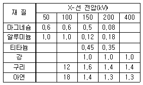
- 6mm
- 12mm
- 24mm
- 환산할 수 없다.
(정답률: 알수없음)
30. 방사선투과검사를 통해 결함의 깊이를 알고자 할 때의 검사방법으로 가장 적합한 것은?
- Micro Radiography법
- Flash Radiography법
- Electron Radiography법
- Parallax Radiography법
(정답률: 알수없음)
31. 다음 중 용접부의 개선면과 입사되는 방사선의 각도에 따라 검출율이 크게 변하는 것은?
- 슬래그(slag)
- 언더컷(undercut)
- 융합 불량(lack of fusion)
- 용입 부족(incomplete penetration)
(정답률: 알수없음)
32. 방사선투과검사 장비에 대한 설명으로 틀린 것은?
- 형광증감지는 납증감지에 비하여 명료도가 나쁘다.
- 카세트는 필름과 증감지를 밀착시키는 구실을 한다.
- 투과사진의 농도계에는 측정 방법에 따라 시각식과 광전식이 있다.
- 계조계에 의한 상질의 평가는 개인차에 의한 영향이 크므로 상질을 객관적으로 평가하는게 어렵다.
(정답률: 알수없음)
33. 선량당량에 대한 설명으로 옳지 않은 것은?
- 1mSv는 100mrem으로 환산된다.
- SI 단위는 Sv이며, rem을 사용하기도 한다.
- 흡수선량에 선질계수나 분포계수 등에 보정계수를 곱하여 얻은 보정량이다.
- 1g의 동물 생체조직이 1erg의 에너지를 흡수하는데 필요한 방사선의 양이다.
(정답률: 알수없음)
34. 방사선투과사진의 판독가능 여부는 여러 조건을 만족하여야만 사진을 올바르게 판독할 수 있다. 다음 중 판독조건에 포함될 사항으로 가장 거리가 먼 것은?
- 사진농도
- 결함의 깊이
- 계조계의 값
- 투과도계의 식별 최소 선경
(정답률: 알수없음)
35. 방사선투과용 필름의 선택과 관련된 내용으로 옳은 설명은?
- 감광속도가 높은 필름을 사용하면 결함의 식별이 나빠진다.
- 촬영시간을 단축하기 위해서는 감광속도가 낮은 필름을 사용한다.
- 고에너지에 대한 촬영일 경우 확산성이 큰 필름이 적합하다.
- 좋은 상질의 사진이 요구될 때 입상성이 큰 필름이 적합하다.
(정답률: 알수없음)
36. 그림과 같은 형태의 표적(진초점)을 가진 X선발생장치가 있다. 시험체에 적용되는 유효초점(f)의 크기를 나타낸 것은?
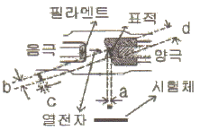
- a
- b
- c
- d
(정답률: 알수없음)
37. 방사선을 이용하여 방사선투과 사진을 촬영하는 원리와 관계가 먼 것은?
- 방사선은 직진한다.
- 방사선은 필름을 감광시킨다.
- 방사선은 시험체를 투과한다.
- 방사선은 시험체에서 산란한다.
(정답률: 알수없음)
38. 그림에서 초점의 직경을 ø, 초점과 필름사이 거리를 F, 결함과 필름사이 거리를 a, 시험체의 두께를 d라하면 기하학적 불선명도(Ug)의 계산식으로 옳은 것은?
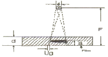
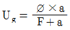
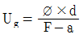
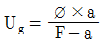
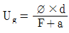
(정답률: 알수없음)
39. 다음 중 방사선투시법(Fluoroscopy)에 사용되는 방사선 검출장치는?
- 필름
- 형광판
- GM 계수관
- 반도체 검출기
(정답률: 알수없음)
40. 방사선투과검사에서 촬영된 필름을 현상할 때 일반적으로 현상시간이 증가하면 투과사진 콘트라스트와 현상속도는 어떻게 변하는가? (단, 현상온도는 20℃로 일정하다.)
- 투과사진 콘트라스트와 현상속도가 모두 증가한다.
- 투과사진 콘트라스트와 현상속도가 모두 감소한다.
- 투과사진 콘트라스트는 증가하고, 현상속도는 느려진다.
- 투과사진 콘트라스트는 감소하고, 현상속도는 빨라진다.
(정답률: 알수없음)
3과목: 방사선안전관리,관련규격및컴퓨터활용
41. 흡수선량(D) 50rad, 평균선질계수(
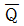
) 1, 분포계수(n)가 1인 경우 선량당량(H)은 몇 Sv인가?- 0.5Sv
- 50mSv
- 87.7mSv
- 438.5mSv
(정답률: 알수없음)
42. 강용접 이음부의 방사선투과 시험방법(KS B 0845)에 의한 투과사진에서 결함의 분류 중 제1종 결함인 것은?
- 파이프
- 융합불량
- 둥근 블로홀
- 긴 슬래그 혼입
(정답률: 알수없음)
43. 보일러 및 압력용기에 대한 방사선투과검사(ASMESec. V, Art.2)에서 이동방사선투과검사시 그림과 같이 선원의 크기 3mm, a 60mm, b 120m, c100mm라면 시험편에서의 빔폭(w)은 얼마인가?
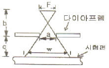
- 112.5mm
- 128.5mm
- 133.5mm
- 141.5mm
(정답률: 알수없음)
44. 알루미늄 평판 접합 용접부의 방사선투과 시험방법(KS D 0242)에 따라 투과 사진에 의한 흠집 점수를 구하는 방식에서 모재의 두께가 30mm일 대 산정하지 않는 흠집모양의 치수로 옳은 것은?
- 0.4mm 이하
- 1mm 이하
- 3mm 이하
- 5mm 이하
(정답률: 알수없음)
45. 다음 중 방사선투과검사시 방사선으로부터의 피폭을줄일 수 있는 방법이 아닌 것은?
- 가급적 노출시간을 줄인다.
- 선원에 콜리메터를 설치한다.
- 선언으로부터 멀리 떨어진다.
- Ci 수가 높은 선원을 사용한다.
(정답률: 알수없음)
46. 원자력법령에서 규정하고 있는 방사선작업종사지의 수정체에 대한 등가선량한도는?
- 연간 150밀리시버트
- 연간 500밀리시버트
- 연간 5시버트
- 연간 10시버트
(정답률: 알수없음)
47. 원자력법령에서 규정하고 있는 방사선작업종사자의 유효선량한도로 옳은 것은?
- 연간 5밀리시버트
- 연간 50밀리시버트를 넘지 아니하는 범위에서 5년간 100밀리시버트
- 연간 5밀리시버트를 넘지 아니하는 범위에서 5년간 10밀리시버트
- 연간 5밀리시버트를 넘지 아니하는 범위에서 5년간 20밀리시버트
(정답률: 알수없음)
48. 강용접 이음부의 방사선투과 시험방법(KS B 0845)에 따른 강관의 원둘레 용접이음부의 2중벽 단일면 촬영방법에서 시험부에서의 가로 균열 검출을 필요로 하는 경우 만족하는 시험부의 유효길이는 얼마인가?
- 관의 원둘레 길이의 1/2 이하
- 관의 원둘레 길이의 1/3 이하
- 관의 원둘레 길이의 1/4 이하
- 관의 원둘레 길이의 1/6 이하
(정답률: 알수없음)
49. 주강품의 방사선투과 시험방법(KS D 0227)에 의하여 투과사진의 등급분류시 호칭 두께가 50mm인 경우 슈링키지인 흠이 있을 때 관찰하여야 할 크기(지름)는?
- 30mm
- 50mm
- 70mm
- 100mm
(정답률: 알수없음)
50. 강용접 이음부의 방사선투과 시험방법(KS B 0845)에 따라 흠의 영상분류에서 갈라짐이 존재하는 경우 항상 몇 류로 결정하는가?
- 2류
- 4류
- 5류
- 6류
(정답률: 알수없음)
51. 입자속밀도(particle flux density ; 일명 선속밀도)의 단위로 옳은 것은?
- 개/cm3
- 개/cm3・g
- 개/cm2・s
- 개/g・cm2
(정답률: 알수없음)
52. 보일러 및 압력용기에 대한 방사선투과검사(ASMESec. V, Art.2)의 절차서 작성시 반드시 기입하지 않아도 되는 것은?
- 선원의 크기
- 선원-시험체간 거리
- 판독등의 사용 전압
- 사용한 동위원소의 종류 및 X선 장비의 전압
(정답률: 알수없음)
53. 보일러 및 압력용기에 대한 방사선투과검사(ASMESec. V, Art.2)에서 시험체의 두께가 1인치일 때 최대 허용 기하학적 불선명도는 몇 인치인가?
- 0.02
- 0.04
- 0.07
- 0.10
(정답률: 알수없음)
54. 주강품의 방사선투과 시험방법(KS D 0227)에서 관찰기의 종류에 따른 투과사진의 최고 농도가 옳게 나열된 것은?
- D10 : 1.4
- D20 : 2.8
- D30 : 3.8
- D35 : 4.5
(정답률: 알수없음)
55. 1rad(라드)를 SI 단위로 옳게 나타낸 것은?
- 1R
- 10-2Gy
- 100Sv
- 100J/kg
(정답률: 알수없음)
56. 숫자로 된 IP조소를 도메인 이름으로 바꾸어 사용하는 체계를 나타내는 것은?
- 라우팅
- DNS
- WAIS
- IRC
(정답률: 알수없음)
57. 운영체제를 제어 프로그램과 서비스 프로그램으로 분류할 때 다음 중 제어 프로그램에 해당하지 않는 것은?
- 감시 프로그램
- 자료관리 프로그램
- 작업관리 프로그램
- 링키지에디터 프로그램
(정답률: 알수없음)
58. 호스트의 사용자가 자신의 호스트나 다른 호스트의 사용자에게 네트워크를 통하여 메시지를 교환하는 방법으로 다른 사용자에게서 온 메시지를 확인하고 자신의 디렉토리에 저장할 수도 있고, 다른 사용자에게 메시지를 보낼 수도 있다. 이 기능에 대한 설명으로 옳은 것은?
- 이 서비스를 사용하기 위해서는 SMPT라는 표준 통신 규약을 따라야 한다.
- 이 서비스를 FTP서비스라고 한다.
- 이 서비스를 이용하기 위해서는 IRC(Internet Relay Chat) 서비스가 제공되어야 가능하다.
- 이 서비스는 LAN에서만 제공된다.
(정답률: 알수없음)
59. 다음 중 법원의 판결문과 같은 많은 부피의 자료를 보관시킬 수 있도록 하는 장치는?
- BPI
- CRT
- COM
- LPM
(정답률: 알수없음)
60. 다음 중 컴퓨터에 다른 프로그램을 변형시켜 컴퓨터의 정상작동을 못하게 하는 프로그램은?
- 컴퓨터 바이러스
- 시스템 오류
- 컴퓨터 버그
- 컴퓨터 디버깅
(정답률: 알수없음)
4과목: 금속재료학
61. 다음 중 피로한도에 대한 설명으로 옳은 것은?
- 지름이 크면 피로한도는 커진다.
- 노치가 있는 시험편의 피로한도는 크다.
- 표면이 거친 것이 고운 것보다 피로한도가 작아진다.
- 시험편이 산, 알칼리, 물에서는 부식되어 피로한도가 커진다.
(정답률: 알수없음)
62. 다음 중 강인강에 대한 설명으로 틀린 것은?
- 강인강은 탄소강에 Ni, Cr, Mo, W, V, Ti, Zr 등을 첨가한 강이다.
- 뜨임에 의해 인성이 증가되는 합금강은 0.25%~0.50% C 강에 Ni, Cr, Mo을 첨가한 것이다.
- Ni-Cr-Mo 강에서 Mo은 담금질 질량 효과를 증가시키며 뜨임취성을 촉진시킨다.
- 흑연강은 강 중의 탄소를 흑연상태로 만들어 절삭성과 윤활성을 개선한 것이다.
(정답률: 알수없음)
63. Hastelloy B-2 합금에 대한 설명 중 틀린 것은?
- 염산에 대한 내식성이 강하다.
- 비자성, 고강도, 저팽창률, 고온에서 낮은 증기압을 나타낸다.
- 용접 열에 의해서 입계 부근에 부식이 일어나지 않는다.
- Fe 2.0% 이하, C 0.025% 이하, Si 0.10% 이하로 줄이면 용접한 상태로 사용할 수 있다.
(정답률: 알수없음)
64. 다음 중 Mg의 특서을 설명한 것으로 틀린 것은?
- 융점은 약 1107℃이다.
- 비강도가 커서 항공우주용 재료로 사용된다.
- 감쇄능이 주철보다 커서 소음방지 구조재로서 우수하다.
- 상온에서 100℃까지는 장시간에 노출되어도 치수의 변화가 거의 없다.
(정답률: 알수없음)
65. 금속분말의 유동도에 영향을 미치지 않는 것은?
- 입형
- 입도분포
- 화학조성
- 입자표면상태
(정답률: 알수없음)
66. 다음 중 오스테나이트 조직으로 결정구조는 FCC이고, 산화성 산에 잘 견디며, 입간부식이 잘 일어나는 금속은?
- 공구강
- 몰리브덴강
- 18-8 스테인리스강
- 해드필드(Hadfield)강
(정답률: 알수없음)
67. 다음 중 실용적 수소저장합금이 가져야 할 성질이 아닌 것은?
- 수소의 흡수와 방출속도가 클 것
- 상온근방에서 수 기압의 수소해리 평형압력을 가질 것
- 단위중량 및 단위체적당 수소흡수와 방출량이 많을 것
- 수소의 흡수와 방출시 평형압력의 차가 클 것
(정답률: 알수없음)
68. 다음 중 Ti 및 Ti 합금에 대한 설명으로 틀린 것은?
- 육방정 금속으로 소성변형에 대하여 제약이 많다.
- 비중이 약 8.54 정도이며, 융점은 약 670℃이다.
- 기계적 성질은 300℃ 온도구역에서 강도의 저하가 현저하게 나타난다.
- Ti 중에 불순물로 O, N, C 등은 Ti 결정구조의 격자점 사이에 들어가는 침입형 불순물이다.
(정답률: 알수없음)
69. 철강의 5대 구성원소 중 철(Fe)과 결합하여 고온취성을 일으키는 원소는?
- S
- P
- Mn
- Si
(정답률: 알수없음)
70. 구상흑연주철의 구상화 원소로 가장 많이 사용되는 것은?
- Fe
- Mg
- Sn
- Mn
(정답률: 알수없음)
71. 경도 시험의 종류 중 대면각이 136°의 다이아몬드제 피라미드 형상의 압인자를 사용하여 경도를 나타내는 시험 방법은?
- 브리넬 경도시험
- 비커스 경도시험
- 로크웰 경도시험
- 쇼어 경도시험
(정답률: 알수없음)
72. 주조용 Mg 합금 중 Mg - Al계 합금과 Mg - Zr계 합금에서 Al, Zr을 첨가하는 주요 목적으로 옳은 것은?
- 열전도도와 취성을 증가시키기 위해서
- 열간취성을 생성시키기 위해서
- 결정립의 미세화를 위해서
- 연성과 강도를 저하시키기 위해서
(정답률: 알수없음)
73. 다음 중 Al 합금에 대한 설명으로 틀린 것은?
- Al-Cu-Si 계 합금을 라우탈(Lautal)이라 한다.
- Al-Si 계 합금 중 공정점 부근 조성의 것을 실루민(Silumin)이라 한다.
- 라우탈(Lautal)은 Si를 첨가하여 주조성을 개선하고 Cu를 첨가하여 피삭성을 향상시킨 합금이다.
- 실루민(Silumin)은 Al에 대한 Si의 용해도가 높아 열처리 효과가 우수한다.
(정답률: 알수없음)
74. 0.5%C를 함유한 강이 상온에서 펄라이트 중의 페라이트 양과 시멘타이트의 양은 각각 약 얼마인가? (단, α 탄소 고용량은 무시하며, 공석점의 탄소량은 0.80%이다)
- 페라이트 7.5%, 시멘타이트 55%
- 페라이트 55%, 시멘타이트 7.5%
- 페라이트 37.5%, 시멘타이트 62.5%
- 페라이트 62.5%, 시멘타이트 37.%
(정답률: 알수없음)
75. 다음 중 Fe-C 평형상태도에 대한 설명으로 틀린 것은?
- α고용체 + Fe3C를 펄라이트라 한다.
- 공정조직을 레데뷰라이트라 한다.
- A2 변태를 Fe3C의 자기변태점이라 하며, 약 768℃이다.
- A3 변태점에서의 반응은 γ-Fe ⇄α-Fe이고, 온도는 약 910℃이다.
(정답률: 알수없음)
76. 염소가 함유된 물을 쓰는 관에 황동을 사용할 경우 흔히 탈아연부식이 발생한다. 이에 대한 방지대책으로 가장 적합한 것은?
- Zn 도금을 한다.
- As, Sn 등을 첨가한다.
- 잔류응력을 제거한다.
- 도료로 도장한다.
(정답률: 알수없음)
77. 다음 조직 중 최대 탄소 함유량이 가장 많은 조직은?
- 페라이트
- 시멘타이트
- 오스테나이트
- 펄라이트
(정답률: 알수없음)
78. 다음 중 신소재합금에 대한 설명으로 옳은 것은?
- 알루미늄 합금 중에서 초소성재료에는 supral 100이 알려져 있다.
- 초소성재료는 높은 응력하에서만 변형이 발생한다.
- 형상기억합금은 고온의 마텐자이트상에서 저온의 페라이트상으로 상변태가 가역적으로 일어날 수 있다.
- 비정질금속의 구조는 결정과 같이 이방성이 있으며, 특정 슬립면이 존재하지 않고 입계, 쌍정, 적 층결함 등이 존재한다.
(정답률: 알수없음)
79. 기능성 신소재와 이에 대한 합금 조성이 틀린 것은?
- 방진합금 : Nb-Ti 합금
- 초서성합금 : Cu-Al 합금
- 수소저장합금 : Fe-Ti 합금
- 형상기억합금 : Ti-Ni 합금
(정답률: 알수없음)
80. 강의 표면경화 열처리에 대한 설명으로 틀린 것은?
- 세러다이징(Sherardizing) 금속침투법은 철강표면에 아연을 침투시키는 방법이다.
- 고체침탄법은 강을 침탄제 속에 넣어 고온가열을 하여 C를 필요로 한 깊이까지 침투시키는 방법이다.
- 가스침탄질화는 참탄가스에 10% 이상의 프레온 가스를 섞어 200~300℃로 4~6시간 가열한다.
- 가스 질화법은 고온에서 NH3 ⇄3H+N의 반응에 의해서 생긴 발생기의 N을 강 중에 침입, 확산시키는 방법이다.
(정답률: 알수없음)
5과목: 용접일반
81. 용접 후 용접면 내의 수축 및 변형의 종류가 아닌 것은?
- 가로수축
- 세로수축
- 피닝변형
- 회전변형
(정답률: 알수없음)
82. 원자수소 아크 용접시 발생하는 열의 온도로 가장 적당한 것은?
- 200~300℃
- 1000~1200℃
- 3000~4000℃
- 5000~7000℃
(정답률: 알수없음)
83. 용적이 40리터인 산소 용기의 고압게가 90kgf/cm2으로 나타났다면 시간당 300리터의 산소를 소비하는 팁으로 이론적으로 몇 시간 용접할 수 있는가? (단, 산소와 아세틸렌의 혼합비는 1:1이다)
- 6
- 9
- 12
- 15
(정답률: 알수없음)
84. 진공 중에서 용접을 하믈 불순 가스에 의한 오염이 적고 활성 금속의 용접 및 용융점이 높은 텅스텐, 몰리브덴의 용접이 가능한 것은?
- 가스 용접
- 플라스마 아크 용접
- 잠호 용접
- 전자 빔 용접
(정답률: 알수없음)
85. 피복제가 연소할 때 발생되는 가스가 폭발하여 용융금속이 작은 입자가 되어 분산 이행되는 용융금속의 이행형식에 해다하는 것은?
- 표면장력헝
- 핀치효과형
- 글로뷸러형
- 스프레이형
(정답률: 알수없음)
86. 피복 아크 용접에서 아크길이가 길 때 일어나는 현상이 아닌 것은?
- 아크가 불안정 된다.
- 스패터 량이 많아진다.
- 용입불량이 된다.
- 산화 및 질화되기 어렵다.
(정답률: 알수없음)
87. 서브머지드 아크용접에서 용접능률 향상 및 특수 목적으로 2개 이사의 전극을 사용하는 다 전극방식에 사용되는 방법이 아닌 것은?
- 직 병렬식
- 텐덤식
- 횡 병렬식
- 횡 직렬식
(정답률: 알수없음)
88. CO2가스 아크용접의 용적 이행 방식에 해당 되지 않는 것은?
- 단락 이행
- 입상 이행
- 스프레이 이행
- 복합 이행
(정답률: 알수없음)
89. 아크 용접기의 수하 특성을 가장 적합하게 설명한 것은?
- 부하전류가 증가하면 단자 전압이 상승하는 특성
- 부하전류가 변하여도 단자 전압이 변하지 않은 특성
- 아크 전압이 변하여도 아크 전류가 변하지 않은 특성
- 부하전류가 증가하면 단자 전압이 저하하는 특성
(정답률: 알수없음)
90. 아크열을 이용하여 자동적으로 단시간에 용접부를 가열 용융하여 용접하는 방법은?
- 일렉트로 슬래그 용접법
- 테르밋 용접법
- 스터드 용접법
- 원자 수소 용접법
(정답률: 알수없음)
91. 가스 절단용 산소의 순도가 낮고, 부순물이 증가되었을때 절단 결과로 옳은 것은?
- 절단면이 깨끗해진다.
- 절단속도가 빨라진다.
- 산소의 소비량이 적어진다.
- 절단 홈의 폭이 넓어진다.
(정답률: 알수없음)
92. 그림과 같이 플라스마 아크 용접에서 텅스텐 전극과 구속노즐과의 사이에서 아크를 발생시키는 플라스마아크의 종류는?
- 이행형 아크
- 비이행형 아크
- 중간형 아크
- 비중간형 아크
(정답률: 알수없음)
93. 탄소강을 용접하는 경우 용접금속에 흡수되어 비드밑 균열(under bead crack)의 원인이 되는 가스로 가장 적합한 것은?
- 산소
- 수소
- 질소
- 탄산가스
(정답률: 알수없음)
94. 용접의 시작이나 끝부분에 생기는 결함을 방지하기 위해 용접이음 부분에 붙여 용접하고 나중에 제거하는 것은?
- 엔드 탭
- 크레이터
- 비드 종단
- 스카핑
(정답률: 알수없음)
95. 가스용접 작업시 역화에 대한 대책으로 틀린 것은?
- 아세틸렌을 차단한다.
- 팁을 물로 식힌다.
- 토치의 기능을 점검한다.
- 안전기에 물을 빼고 다시 사용한다.
(정답률: 알수없음)
96. 가스용접에서 전진법에 대한 설명으로 틀린 것은?
- 용접속도는 후진법에 비하여 느리다.
- 소요 홈 각도는 후진법에 비하여 작다.
- 용접 변형은 후진법에 비하여 크다.
- 열 이용률은 후진법에 비하여 나쁘다.
(정답률: 알수없음)
97. 용접시공의 계획 및 관리에서 4M에 해당 되지 않는 것은?
- 사람(Man)
- 기계(Machine)
- 재료(Material)
- 영업(Market)
(정답률: 알수없음)
98. 가동 철심형 교류아크 용접기의 특성 설명으로 틀린 것은?
- 광범위한 전류 조정이 어렵다.
- 미세한 전류 조정이 불가능하다.
- 누설자속의 가감으로 전류를 조정한다.
- 중간 이상 가동철심을 빼내면 누설자속의 영향으로 아크가 불안정하게 되기 쉽다.
(정답률: 알수없음)
99. 충전된 용해아세틸렌 용기의 무게가 56.5kg이었는데 사용한 빈 용기의 무게가 52.5kg이었다면 15℃, 1기압에서 기화하였을 때 아세틸렌가스의 부피는 몇 ℓ인가?
- 2715
- 3620
- 272
- 362
(정답률: 알수없음)
100. 피복 아크 용접봉 중에서 작업성은 나쁘나, 기계적성질, 내균열성이 가장 좋은 용접봉은?
- 티탄계
- 고셀룰로스계
- 일미나이트계
- 저수소계
(정답률: 알수없음)